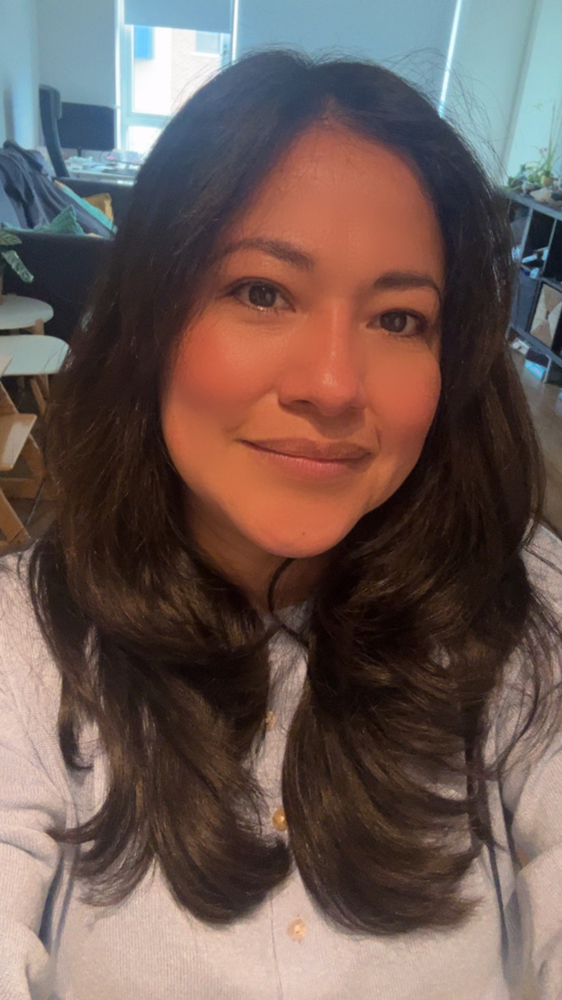

Hi, I'm Adriana
Digital Content & Web Specialist
A Mexican creative from Oaxaca, Mexico — raised 15 minutes from the world capital of mezcal — who traded mezcal sunsets for Irish rain about 10 years ago, and honestly? Best decision I ever made.
I work in English and Spanish. Six years of analysing online content taught me to notice patterns in language and consider how different readers might interpret the same words. I draw on that experience when I plan a page, write a product description or choose a photograph.
My WordPress photography site gave me hands-on publishing experience. At Raíz Atelier I brought photography, bilingual web content and digital marketing together. I’m developing my SEO and web analytics skills to understand how visitors find and use my work.
My story
My path hasn't been a straight line — and I think that's what makes it interesting. I studied Marketing in Oaxaca, Mexico, and in 2006 I moved to Toronto, Canada for a cultural immersion — my first big leap, driven by a desire to learn English and experience the world beyond Mexico. That year abroad changed everything. Back home, I joined Europcar from 2008 to 2009, then moved into sales as Sales Assistant to the General Manager at a JCB machinery and parts company from 2009 to 2010, before working in brand management with Heineken and eventually packing my bags and landing in Ireland. What started as an adventure turned into a decade of building a life, a career, and a completely new skill set.
From hospitality roles in Los Angeles and Dublin between 2013 and 2017, I made the decision to step back from work to care for my family and my son. It was one of the most important and fulfilling chapters of my life. Eventually I returned to the workforce and in 2020 I joined Covalen Solutions as a Trust & Safety Analyst — while simultaneously studying Multimedia & UX Design at Stillorgan College. I never stopped learning: from 2021 to 2023 I completed a Higher Diploma in Human Interactive Design at Dublin City University, again alongside my full-time role. In 2023 I transitioned into AI Data Annotation and Content Evaluation, a role I held until 2026.
After being made redundant from Covalen Solutions in 2026, I made the decision to fully dedicate myself to studying — deepening my knowledge in digital marketing, SEO, and web development through the Illinois Institute of Technology via Coursera, and also completing a SOLAS course on how to start my own business. It's a deliberate pause to invest in myself and come back stronger. Being fluent in two languages and having lived across multiple cultures isn't just a line on my CV — it shapes how I think, how I communicate, and how I design.

Skills
Beyond the screen
I make, I shoot, I listen — these are my three creative outlets outside of work. Each one feeds the way I think and design.
From sourdough and conchas to handmade piñatas and party crafts — I put the same care into everything I make by hand.
Nikon D7100 — always looking for the right light, the right moment. One lens is a Lomography.
The soundtrack to late-night studying, weekend baking, and everything in between.
Say Hi! Let's talk
I’m open to digital content, web and digital marketing roles in Dublin and remotely.
GET IN TOUCH